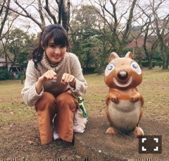
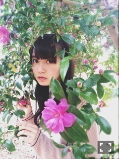
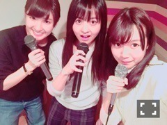

| 2015/11 16 Mon | 石鹸かじった。679回目 |
先日は乃木坂浪漫
スペシャルイベントがありました！
乃木坂浪漫で初めて読んだのが
夢野久作"ドグラ・マグラ"。
これがあまりにもインパクト強くて
思い出深いです。
そして、紹介した本は
小林健二"みづいろ"！
小林さんの作品集や結晶キットも
持っているのですが、
この本は詩集！
幼い頃の記憶の記録が
とても純粋で危なっかしくて
懐かしい気持ちになります。
紙の一枚一枚丁寧めくりたい本です。

そして、昨日はミュージカル
リボンの騎士を観劇しました！
玲香といくちゃんが
役そのもので、終わった後も
わーサファイアとヘケートだー！
となっていました。
舞台のパワーってすごい。
こうしたミュージカル、
舞台や展覧会って
行って後悔することなくて
寧ろモチベーションが上がります。
これからも積極的に
いろんなのを観に行こうと思う。
ふたりとも、千秋楽までがんばって！

乃木坂工事中、
温泉ロケに行ってきました。
わだかまり企画というのを
知った上でのロケだったので、
落ち着いているようで
あまり落ち着かなかったです。
スタジオで、旅行計画時に
日芽香のことは
少しでも考えなかったの？
と言われた時、実は遅れて
頭に浮かんでいました、伝えてました
もちろん、たまたま万理華で
勢いであったのは本当ですが、
富山旅行で日芽香の話題が
出ないわけない！と。
さゆも自由人だから、
ただ五箇山に行きたくて
前から計画していたのを
知っていましたし、私が夏休み
たまたまオフだったと
言うのもあります！
日芽香が実家に帰ることは
聞いていましたが、
こっちの計画をしっかりと
伝えてなかったのは
申し訳ないなと反省しています。
ロケ中、正直わかった上で
騙すのは苦しかったです(T . T)
スタジオ収録日まで、
逆ドッキリだということを
黙っていなければいけなかったのも
とても辛かった。
ロケ終了後、楽しかった！
でも騙しちゃってごめんね、
と謝って日芽香に
罪悪感でいっぱいでした、、

服装がぴったりな井上さん

オンエアには無かったけど、
日芽香も撮ってました(^o^)
じしんさく！
結果的に、わだかまりは解消！
改めて3人で温泉に入ってたら
マネージャーさんが来て
「2時間経っても戻ってこないから
みんなのぼせちゃってるのかと思った！」
と言われました。
ドッキリのネタバレはせずも、
ロケが終わって気持ちが解れたのか
話に夢中になり過ぎて
2時間も経っていたみたいです。。
温泉上がってからの
コーヒー牛乳最高だったなあ
実はこの前、この3人で
カラオケ行きまして...
1日の半分一緒に過ごしました笑
8割乃木の曲歌ったヽ(ﾟ､｡)ﾉ
途中から踊りながら歌ったヽ(ﾟ､｡)ﾉ
マイクパスのタイミング絶妙ヽ(ﾟ､｡)ﾉ
でも2本しかないのが不便だから
1本追加していただいたヽ(ﾟ､｡)ﾉ
それぞれお土産のセレクトが
さつまいも、大学芋、スイートポテト
偶然にも全員イモだったヽ(ﾟ､｡)ﾉ

カラオケって、楽しいね、、！！
乃木の曲ほぼ歌ったのですが、
その中でも唯一リピートした
1曲はなんでしょうか？
3人とも仲良し、〜組！とか
そういうのではなく。
それは他のメンバーとも
そうなのですが、みんな
基本ひとりで行動する人間です。
女子である以前に、
自立したひとりの人間。
だからこうして、たまに
集まるのが良いんです。
ひとりである時はひとり。
みんなでいる時はみんなで。
メンバーは、ライバルである上
家族のような存在なのです。
その中でもこの2人とは
考え方が似ていて
一緒にいて落ち着く存在ですが、
みんな、大切な存在。
それぞれ、刺激し合える仲間。
今回、まさか3人でロケが
できるとは思っていませんでした！
なかなかいつもの感じを
出せる機会がないので、、
本当に嬉しかったです。
ありがとうございました。
また機会があれば、この3人で
ロケできたらいいなあ、、
間違っても嘘をつくことは
もうしたくない。
見てくださったみなさん、
ありがとうございました！！！
まりか
コメント(704)
2015/11/16 14:42